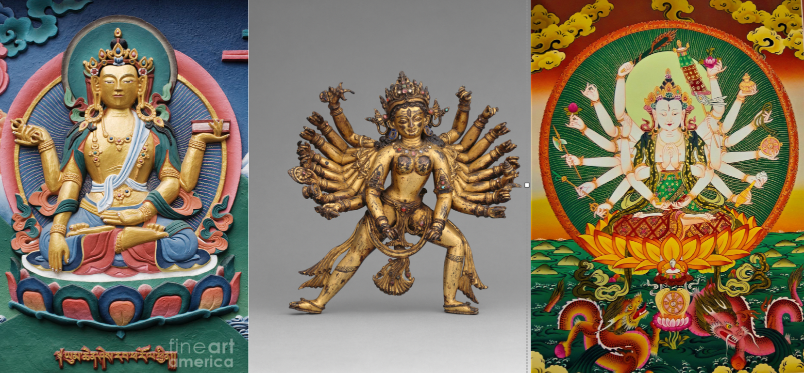
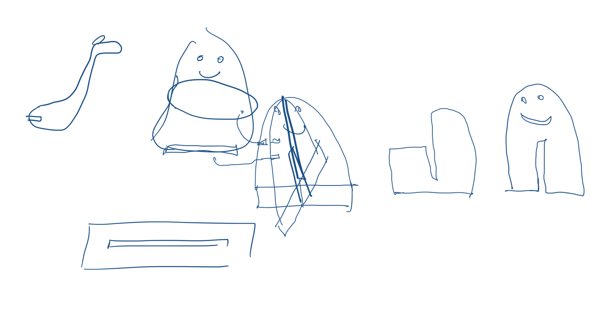
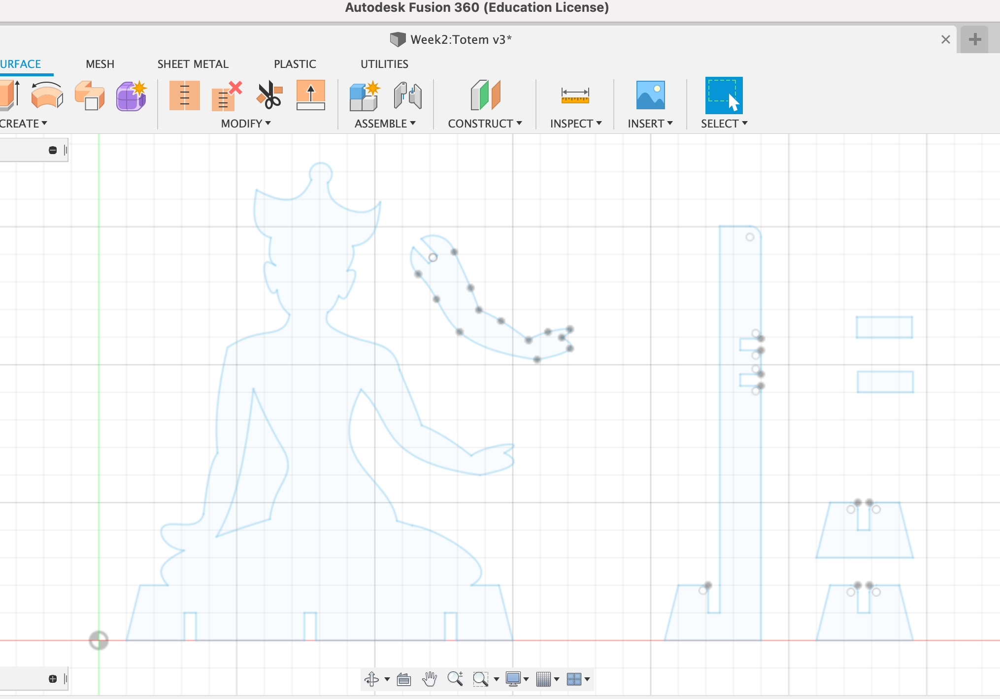

Press-fit construction
The Inspiration

//Begin serial communication
void setup() {
Serial.begin(9600);
}
//Initialize variable to store readings from pin A0
void loop() {
int value = analogRead(A0);
//Print readings from pin to Monitor
Serial.println(value);
delay(10);
}
//Begin serial communication
void setup() {
Serial.begin(9600);
}
//Initialize variable to store readings from pin A0
void loop() {
int value = analogRead(A0);
//Convert analog reading to voltage value
int voltage = value * 5.0/1023;
//Print readings from pin to Monitor
Serial.println(voltage);
delay(10);
}

After scrolling through many images of various Buddhist gods and idols, I picked one image to use as a reference for my model. I cleaned up the image in Photoshop and then exported the .png to Fusion360 to use as a reference as I drew out the sketch of the main body.
The Sketch
Before I proceeded with creating the various parts of the press-fit construction, I sketched out the ways I would transfer a 2D image to a freestanding 3D construction. I was concerned with how I would ensure the model would stay upright and how I would connect the arms to main body. For simplicity, I decided I would create cross-hair feet to keep the model upright and create a 'spine' running behind the model to attach the arms.
Actually sketching the press-fit shapes in Fusion3D was the most time intensive step of the process, but only because the design is mainly non-linear shapes. I made simplifications on smaller details for time. The final Fusion3D sketch included designs for the front-facing torso, arm, spine, and feet. The shape for the arms were replicated later in Lightburn. The width of 'notches' that would be used to press the shapes together depends on the thickness of the stock and the laser kerf. I wanted a tight fit between my pieces so I standardized my notch widths to 4.2mm.
The Cut & Assembly

The design was cut onto 4.5mm cardboard stock. I used the recommended laser setting which was 15mm/s speed and 60% strength, which cut clean through the cardboard.

As shown above, the model can be constructed to customize the direction of the arms and torso. The 4 unattached arms can be fitted facing up or down, and the torso can lean left or right depending on how the pieces are assembled.
The Final Product

I am very happy with the final result. My small press-fit idol now sits happily on my windowsill to bless all my future fabrication endevours.